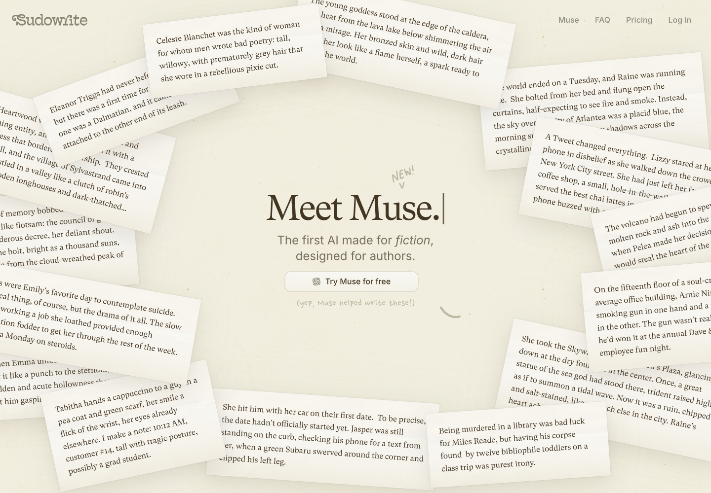
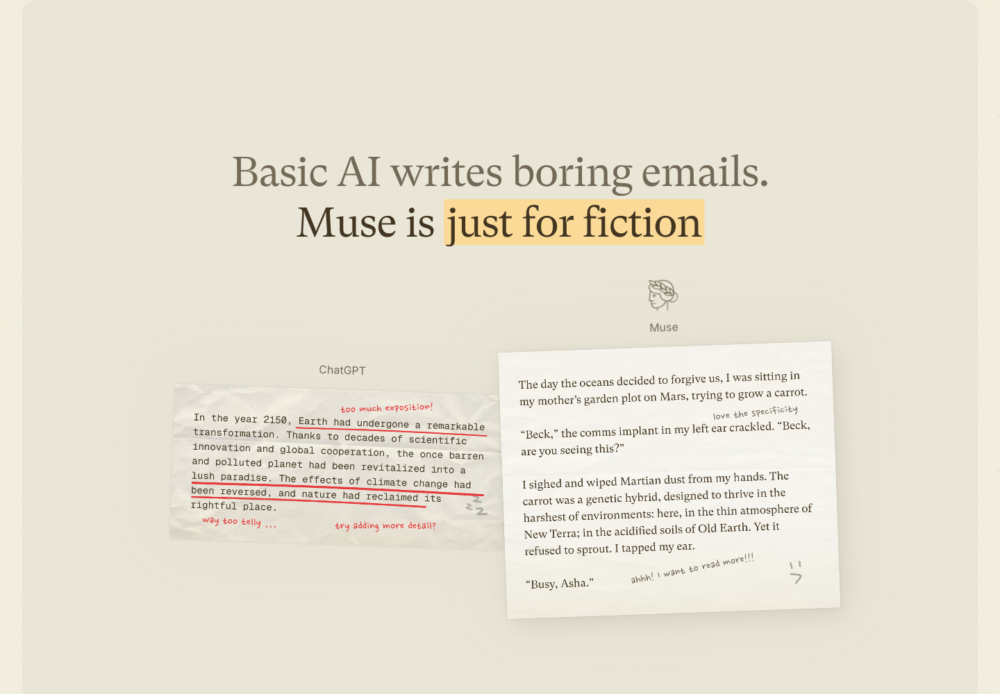
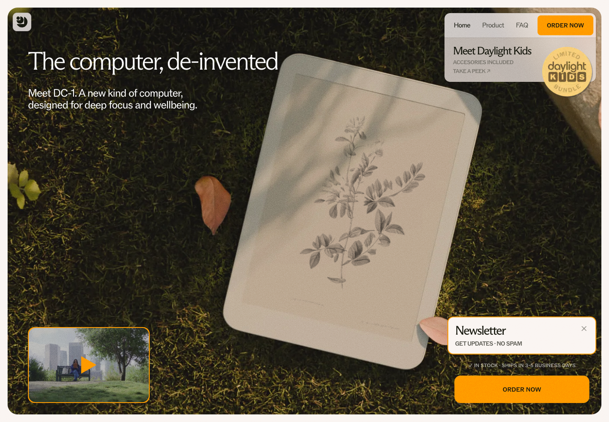
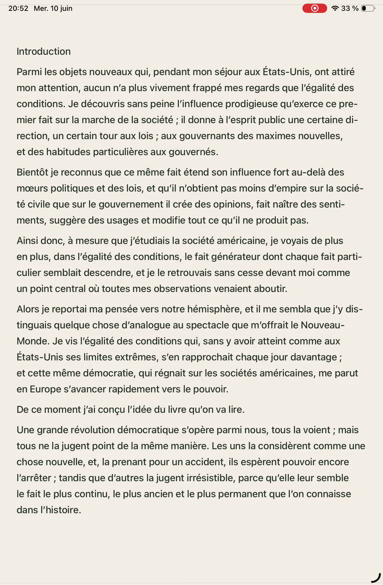
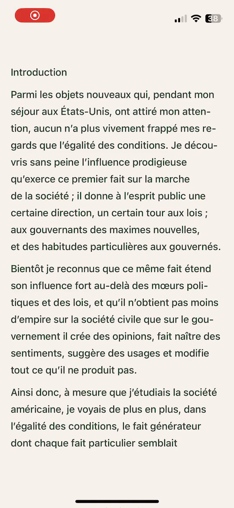
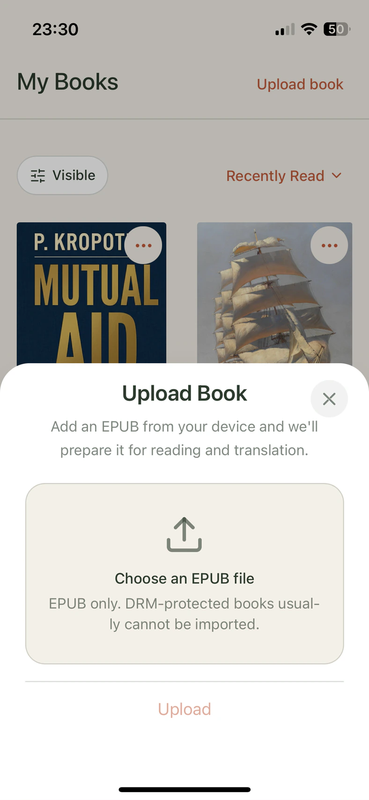
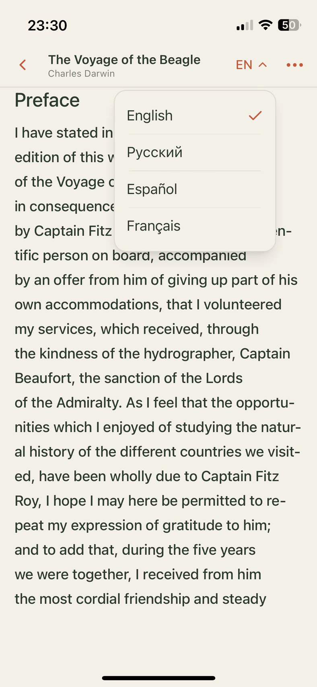
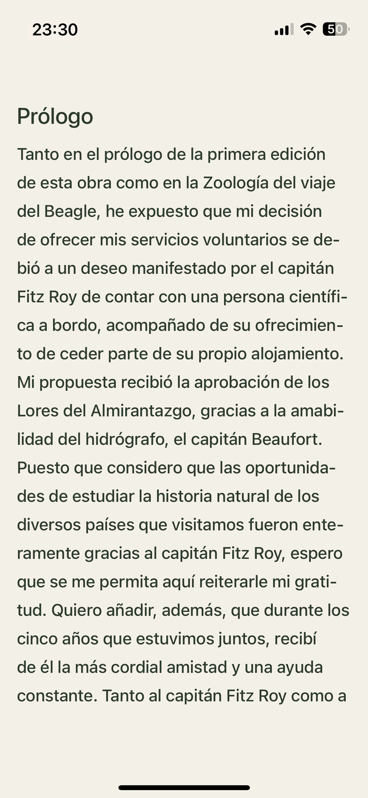
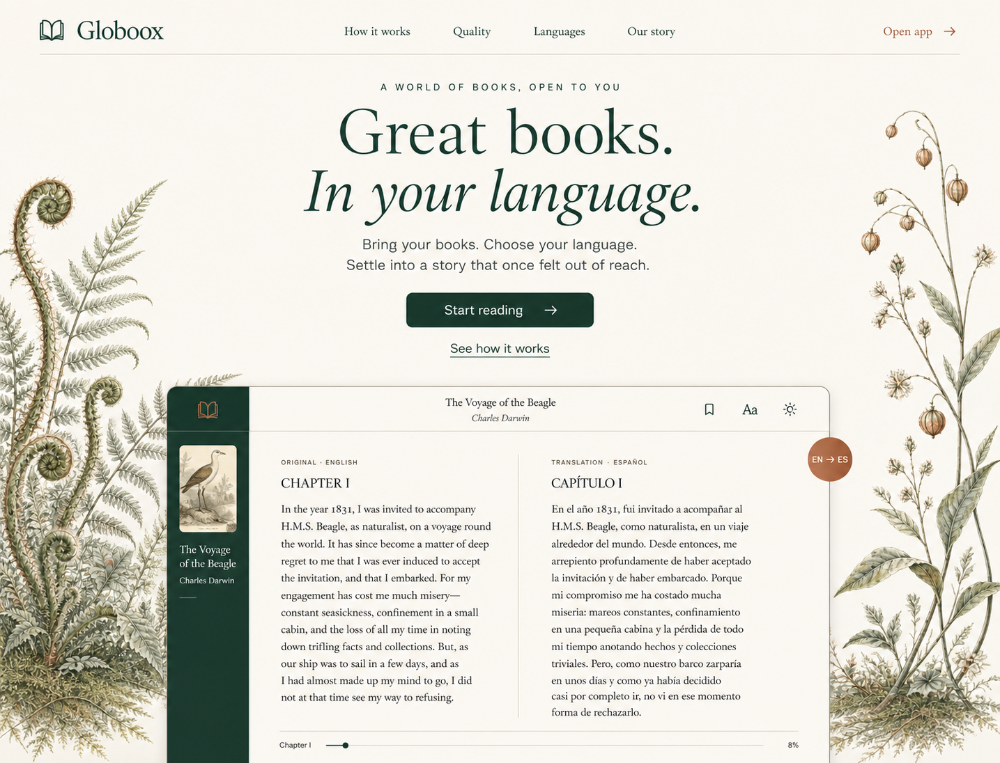

{kind=link}
{kind=link}
{kind=link}
{kind=link}
{kind=link}
{kind=link}
{kind=link}
{kind=link}
{kind=link}
01
A sequence.
Six interface states: upload, library, language, translation progress, reading, and appearance.
↳Keep a coherent visual grammar across the existing three landing steps.
Landing page redesign · internal visual study
Typography, composition, and product framing.
A presentation study for the existing Globoox landing.
A considered presentation around the real Globoox app: existing screen recordings and screenshots, beautiful supporting type, and warm paper. All original marketing text and the app icon remain unchanged.
Muse is our primary visual reference. Its strength is a consistent material world and a carefully protected center. Click any capture to inspect it.

Primary referencePaper, restrained shadows, and literary type form a single visual language. The perimeter frames a place for the eye to rest.

The same paper and type language survives a different composition. The example does the explaining.
Each is selected for a particular quality. We are combining principles, not collecting styles to imitate.

Editorial type. Tactile surroundings. An orderly app.
TakeA literary treatment of the full original headline, quiet controls, and a coherent material language.
LeaveThe busy collage and low screen entrance. Globoox’s reader deserves more of the first viewport.

Organic framing that belongs to the experience.
TakeA natural perimeter, soft light, and a clear central object. The botanical detail gives the product a context.
LeaveThe many secondary panels. Use a quieter frame and a readable book screen for Globoox.

The screen makes the category immediately clear.
TakeConfident product scale, visible reading content, and one main action. Show the benefit in the interface.
LeaveThe dark gradient and feature density. This is a hierarchy reference, not our palette or serif reference.

Very little competes with the working surface.
TakeRestrained presentation of the existing introductions, generous breathing room, and a recognizable interface.
LeaveThe large gap before the screen. Preserve calm without delaying the moment of understanding.
An internal art direction, not a new tagline. Warm editorial materials frame actual product recordings and support the unchanged marketing copy.
Original hero copy · preserved verbatim
Globoox — reading app that instantly translates e‑books into your native language.
Newsreader Display · reading · restrained italics
Three simple
steps
Aa Bb Cc Dd Ee Ff Gg 012345
Literary without ceremony. Open, comfortable letterforms give both a short headline and a long paragraph room to breathe. Use italics for a single turn of phrase.
DM Sans Navigation · labels · controls
Upload your first book
The Voyage
of the Beagle
El viaje
del Beagle
A clear companion to the serif. Small labels stay legible; the controls establish hierarchy without competing with the words.
Landing typography only. Samples come from existing text; they are not replacement app UI. Source recordings and screenshots retain their original typography.
The page. The pause. The default.
Readable ink and decisive actions.
Marginalia and quiet atmosphere.
Small accents. Never everything.
Existing product recordings replace the fictional reader. These are their original posters, copied unchanged for this portable board.

Original wide reading view · 1280 × 820
mac_screen_record_1280w_h264.mp4
Poster: public/images/device-posters/mac.webp

Original portrait view · 768 × 1170
ipad_screen_record_768x1170_h264.mp4
Poster: public/images/device-posters/ipad.webp

Original mobile view · 540 × 1170
iphone_screen_record_540x1170_h264.mp4
Poster: public/images/device-posters/iphone.webp

Original source: 1.1.webp

Original source: 2.1-en.webp

Original source: 3-en-es.webp
This historical generated image explores placement, paper, and botanical margins. Its fictional screen, generated cover, copy, and replacement icon are superseded.
Archived study only: use the actual recordings/screenshots, every original string from getLandingMessages('en'), and public/icon.svg. The fictional screen, generated cover, invented copy, and replacement icon inside this image must not ship.

ARCHIVE ONLY · SCREEN, COPY & ICON SUPERSEDEDRetained lessons: broad placement, restrained paper materials, and inward framing. The final landing uses the real product videos and full original headline. The invented screen and cover remain archived.
An annotated contact-sheet index to the five user attachments. The originals remain in the conversation; these are descriptions, not replacement screenshots.
Six interface states: upload, library, language, translation progress, reading, and appearance.
↳Keep a coherent visual grammar across the existing three landing steps.
A large bilingual tablet, a smaller language picker, pine branding, and a subtle botanical edge.
↳Our strongest hierarchy reference: one screen, one supporting action.
A desktop reader, a tablet of books, and a phone reading view share the same warm materials.
↳Keep consistency. Reduce device overlap so book text remains legible.
A wide bilingual page supported by language, appearance, and progress panels.
↳Use one deliberate detail at a time. Every floating panel needs a reason.
Angled devices connect a book library to a translated page through a central language choice.
↳Keep the idea of connection. Replace tilted miniature text with a crisp, direct view.
01 / The product
A large recording of the actual app, with real desktop, tablet, and phone views. Accessible device tabs and Play/Pause control the media. The recorded interface remains unchanged.
02 / The frame
A fine botanical accent draws the eye toward the actual product recording. Thin rules, paper tone, and soft shadows do the rest. Decoration never crosses the screen or its media controls.
03 / The pace
Bring the reader into the opening view. Keep every original string and block. Use considered line lengths, spacing, and product details to make the existing content easier to scan.
Original structure & copy stay
A new presentation.
The same original copy and app icon.